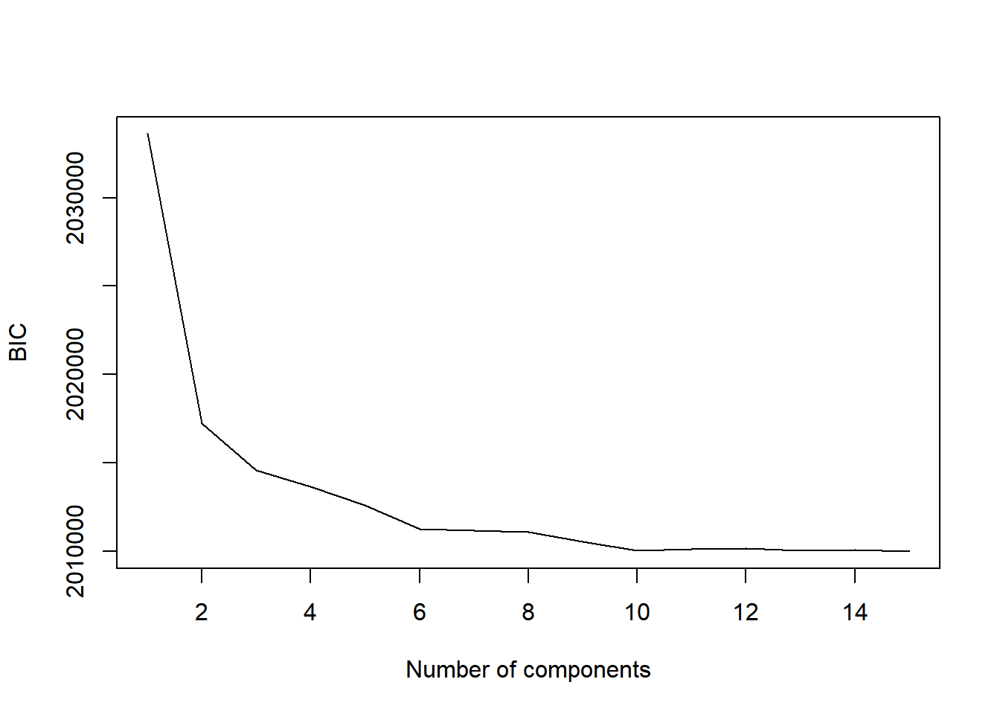
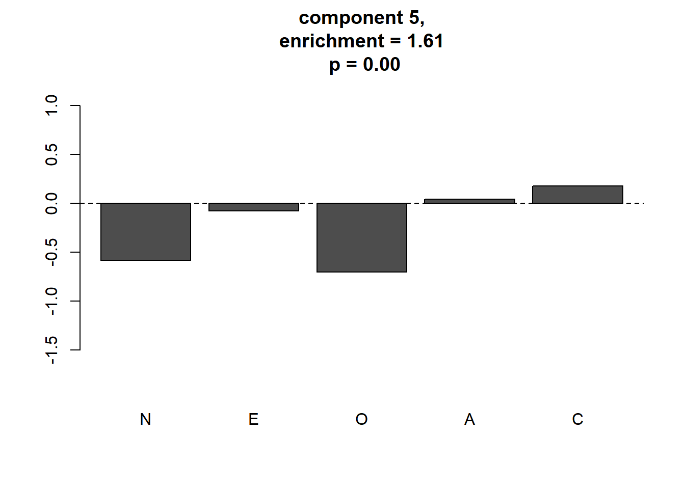
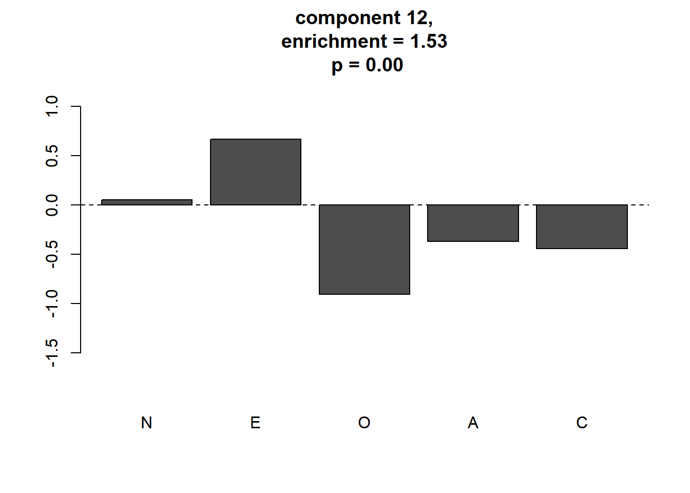
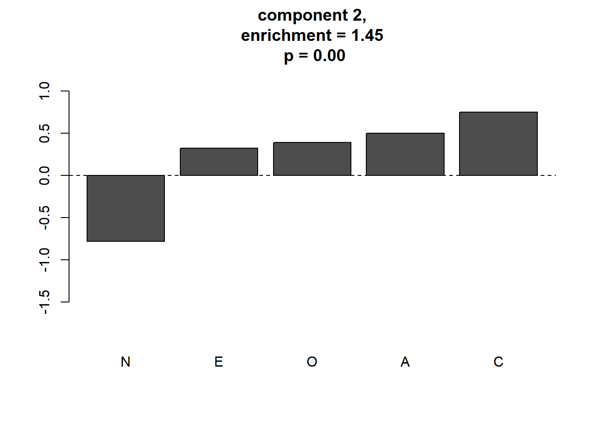
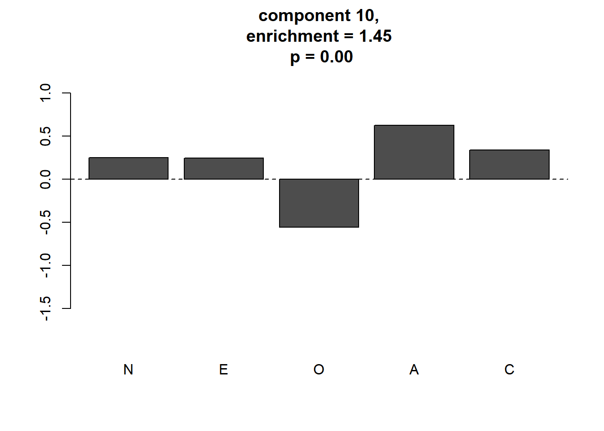

ここでは，実データ (Johnson-300) の解析1で Johnson-300データから出した因子スコアに対し， GMM，ヌルモデルとの比較まで行います。 実データ (Johnson-300) の解析2 からの変更点は，Gerlach同様に，GMMの推定にPythonのscikit-learnパッケージを用いるところです。 scikit-learnのGMMがMClustと違うのは，初期値にK-means法の 結果を用いることができる点です。MClustは階層クラスター分析の結果を初期値に 使います。今回のように，明確なクラスター構造がないデータに GMMを適用する場合は，クラスターの平均間の距離が大きくなるよう クラスターを割り当てるK-means法の結果を初期値に使った方が 尤度を高くする解に到達しやすいようです。 RでGMMのフィッティングを実行するスクリプトを書くことは簡単ですし，他にもGMMの Rのパッケージは存在するのですが，scikit-learnはそれより高速で， データサイズが大きい場合はその計算時間の差はクリティカルになってきます。
以下の記事などを参考に，RからPythonを使う準備をします。 - [@yamano357さんのブログ:reticulateパッケージでRからPythonを使う](https://qiita.com/yamano357/items/9319d4b073d82a261ed8) 具体的には，scikit-learnが入っているPythonのディストリビューション， Anacondaをインストールすると良いと思います。
それから，以下のコマンドをコンソールに入力してreticulateパッケージを インスト―ルしてください。
install.packages("reticulate")必要なパッケージを読み込みます。
library(reticulate)こちらのページで解説した クラスター評価のための関数を読み出します。
source("functions_component_evaluation.R")## Registered S3 methods overwritten by 'ggplot2':
## method from
## [.quosures rlang
## c.quosures rlang
## print.quosures rlang## -- Attaching packages ---------------------------------------- tidyverse 1.2.1 --## √ ggplot2 3.1.1 √ purrr 0.3.2
## √ tibble 2.1.3 √ dplyr 0.8.1
## √ tidyr 0.8.3 √ stringr 1.4.0
## √ readr 1.3.1 √ forcats 0.4.0## -- Conflicts ------------------------------------------- tidyverse_conflicts() --
## x dplyr::filter() masks stats::filter()
## x dplyr::lag() masks stats::lag()実データ (Johnson-300) の解析1で作成した 因子スコアデータを読み出します。パスはご自身のものに合わせてください。
df_sc <- read.csv("C:/data/personality/fs_IPIP300.csv", header = TRUE)GMMのフィッティングを行い， BICによりコンポーネント数を選択します。
sk <- reticulate::import(module = "sklearn")
sk_gmm <- sk$mixture$GaussianMixture
klist <- 1:15 # コンポーネント数 (Gerlachは30までにしている)。
n.rep <- 20 # 異なる初期値からの繰り返し数 (Gerlachは100回にしている)
# 以下，結果を格納するための配列，リスト
biclog <- numeric(length(klist))
gmm_list <- list()
c.center_list <- list()
for (idxk in seq_along(klist)){
K <- klist[idxk]
likelihood <- -Inf
gmm <- sk_gmm(as.integer(K),
n_init = 1L,
max_iter = 100L,
init_params = "kmeans")
for (idxrun in 1:n.rep) {
gmm$fit(df_sc)
ll <- gmm$lower_bound_
if (ll >likelihood) {
likelihood <- ll
c.center_list[[idxk]] <- data.frame(gmm$means_)
names(c.center_list[[idxk]]) <- names(df_sc)
biclog[idxk] <- gmm$bic(df_sc)
gmm_list[[idxk]] <- gmm
}
}
cat("scikit GMM ", "K= ", K," ll= ",likelihood, "bic=", biclog[idxk],
"itr:", gmm$n_iter_, "\n")
}## scikit GMM K= 1 ll= -6.99302 bic= 2033640 itr: 2
## scikit GMM K= 2 ll= -6.936202 bic= 2017208 itr: 18
## scikit GMM K= 3 ll= -6.926241 bic= 2014553 itr: 9
## scikit GMM K= 4 ll= -6.92224 bic= 2013661 itr: 9
## scikit GMM K= 5 ll= -6.917915 bic= 2012596 itr: 8
## scikit GMM K= 6 ll= -6.912316 bic= 2011232 itr: 9
## scikit GMM K= 7 ll= -6.911151 bic= 2011157 itr: 9
## scikit GMM K= 8 ll= -6.910133 bic= 2011089 itr: 9
## scikit GMM K= 9 ll= -6.907291 bic= 2010521 itr: 8
## scikit GMM K= 10 ll= -6.904762 bic= 2010041 itr: 8
## scikit GMM K= 11 ll= -6.904092 bic= 2010104 itr: 8
## scikit GMM K= 12 ll= -6.903366 bic= 2010150 itr: 9
## scikit GMM K= 13 ll= -6.902194 bic= 2010030 itr: 9
## scikit GMM K= 14 ll= -6.90136 bic= 2010044 itr: 9
## scikit GMM K= 15 ll= -6.900203 bic= 2009971 itr: 9plot(klist, biclog, type = "l",
xlab = "Number of components", ylab = "BIC")
Gerlachらは単にBICが最小になったところを選ぶのではなく， ブートストラップ法を使った検定を行い，BICが有意に減少しなく なるコンポーネント数として，13を選択しています。 ここでは，そこまではしませんが， Gerlachらにならって，コンポーネント数は13を選択します。
BICで選択されたモデルの各コンポーネントの平均を求めます。
idxk <- which(klist == 13)
component.centers <- c.center_list[[idxk]]各コンポーネントの平均の座標の密度と，その座標におけるヌルモデルの密度を比較し，meaningful clusterであるか否か判定します。
なお，シャッフルの回数はGerlachらは1000回にしていますが， ここでは時間の短縮のため20回のみにしました。
res_ec <- eval_component(df_sc, component.centers,
n.shuffle = 20) ## Bandwidth selection...
## kernel dinsity estimation for original data...
## kernel dinsity estimation for shuffled data...
## ==print(res_ec)## $d.original
## 1 2 3 4 5 6
## 0.005526820 0.007386424 0.001002944 0.002816708 0.010009359 0.003370110
## 7 8 9 10 11 12
## 0.002814864 0.004757709 0.002858488 0.009235408 0.002469255 0.006150435
## 13
## 0.002957968
##
## $d.null
## [1] 0.005442782 0.005099011 0.001118303 0.003086953 0.006217502
## [6] 0.004017524 0.003138894 0.004482056 0.002685799 0.006382228
## [11] 0.002987596 0.004027899 0.003220678
##
## $p.value
## [1] 0.35 0.00 0.90 0.95 0.00 1.00 1.00 0.05 0.20 0.00 1.00 0.00 0.90
##
## $enrichment
## [1] 1.0154402 1.4485995 0.8968446 0.9124557 1.6098682 0.8388524 0.8967692
## [8] 1.0615014 1.0642969 1.4470507 0.8265020 1.5269587 0.9184302meaningful clusterをプロットします。
plot_meaningful_cluster(res_ec, # 関数eval_componentの出力
component.centers,
p.threshold = 0.01,
enrichment.threshold = 1.25
) 4つのmeaningful clusterが同定されました。この4つがGerlachらが同定した パーソナリティの4つの“タイプ”です。